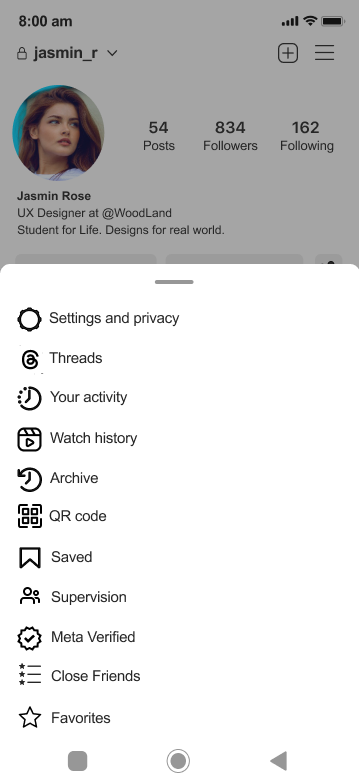
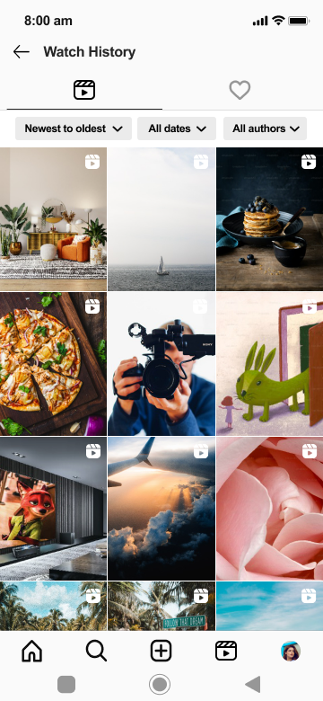
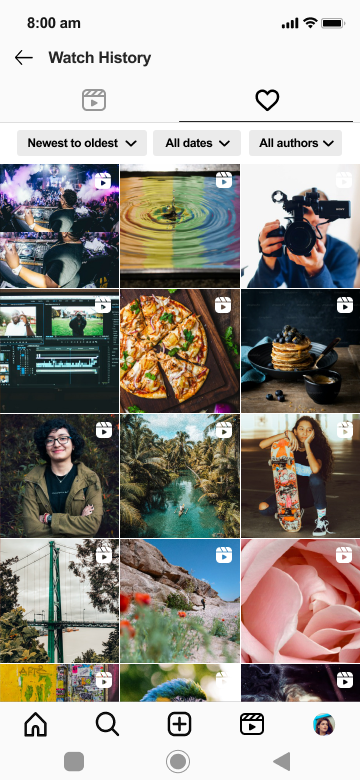
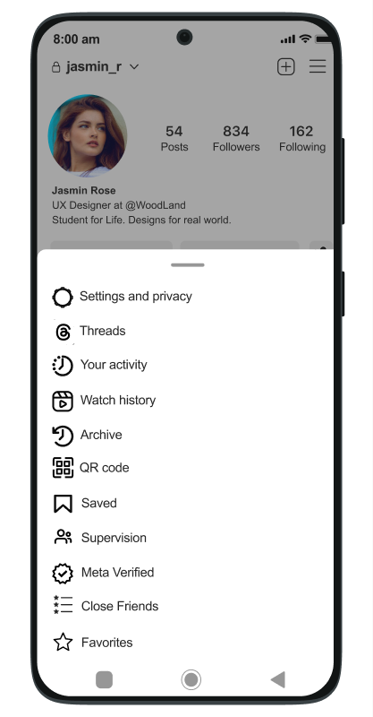

A new feature that lets users find every Reel they've watched or liked — without ever leaving Instagram's design language.



Instagram Reels are designed to be consumed fast — you scroll, you watch, you move on. But users constantly hit a wall: they can't find a video they watched yesterday. There's no trail, no history, no way back.
If you liked it, it lives under your profile saves. But if you just watched it and scrolled past? Gone. You're left searching by hashtag, replaying your memory of what it looked like, or just giving up.
How might we let Instagram users find any video they've already watched or liked — without disrupting the scroll experience or introducing unfamiliar UI?
Active Reels consumers who watch 10–30 videos a day. They're not passive — they share, save, and come back to content. But the current app treats every scroll session as ephemeral.
The feature lives exactly where users already look for account-level settings — no new navigation layer needed.
Profile → hamburger menu → "Watch history" — slotted alongside Archive, Saved, and Your activity. No new navigation introduced.
Every Reel watched, in a 3-column grid. Filterable by date and author. The clapperboard tab shows all consumed content — liked or not.
The heart tab narrows to only liked videos. Same grid, same filters — the familiar Reels grid pattern applied to a new context.
Zero new patterns. Every element — the grid layout, the filter chips, the tab bar, the sheet menu — already exists in Instagram's design system. Watch History is a feature addition that feels like it was always there.
The first design decision was placement. Instagram has three plausible homes for Watch History: the Explore tab, the Reels tab, or the Profile menu. The Profile menu was the right call — it sits alongside "Your activity", "Archive", and "Saved", all features that answer the same question: "what did I do on this app?"
Adding it to the Reels feed would interrupt the scroll. Adding it to Explore would make it feel like a discovery tool rather than a personal record. The Profile menu signals ownership and history, which is exactly what Watch History is.

Watched and liked are different user intents. Watched means "I consumed this" — it's a neutral factual record. Liked means "I explicitly endorsed this" — it's a higher-signal action. Combining them into one list would conflate two very different relationships with content.
Separating them into two tabs (clapperboard icon for watched, heart for liked) respects both intents and gives users two genuinely different entry points to find what they're looking for.
A raw grid of watched videos isn't enough if there's no way to narrow it. Three filter chips — Newest to oldest, All dates, and All authors — map to the most natural ways users remember content: "I saw it last week", "it was from a cooking account", "it was recent."
The filters use Instagram's existing chip component — visually identical to what already appears in Explore search. No new UI pattern, and users already know how to use them.
Avoids cluttering the bottom nav bar (already at capacity) and places Watch History alongside analogous personal-record features like Saved and Archive.
Reels are visual first. A list view showing titles or captions would be unhelpful — users remember videos by thumbnail, not by caption. The grid matches Reels' existing visual browsing pattern.
Both icons are already in Instagram's icon library. The clapperboard signals "video/content", the heart signals "liked". No new icon design required; the meaning is immediately clear.
Every interaction in Watch History — tapping a grid item, using filter chips, swiping between tabs — uses interaction patterns that already exist in the Instagram app. The learning curve is zero.
Audited existing Instagram patterns — tabs, grids, menus, filter chips. Mapped what already existed.
Mapped the entry points across the app. Chose Profile menu after comparing 3 placement options.
Low-fi sketches to validate the two-tab metaphor and grid vs. list layout tradeoffs.
Built in Figma using Instagram's exact component library — every element matched the existing system.
The constraint was the design. "Zero new patterns" sounds like a limitation — it turned out to be the entire brief. Every decision (placement, layout, icons, filters) was about finding the right existing component for a new job.
Two tabs came from asking "what do users mean?" The instinct was one list. Splitting to two tabs came from recognising that "I watched it" and "I liked it" are genuinely different memories users try to retrieve.
What I'd test next: whether users naturally look for Watch History under Profile, or whether they expect it in the Reels tab. The placement is a hypothesis — a quick usability test with 5 users would confirm or challenge it.
What's missing: a "clear history" option and privacy controls (hide specific videos from history). These are table-stakes for any watch history feature and would be the first additions in a v2.
View the full Figma file with all screens and component notes
Open in Figma →